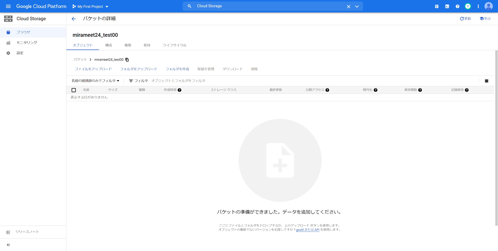
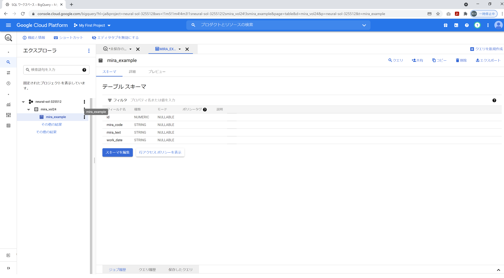

ダウンロードしたファイルの解凍と設定
この手順では、GithubからダウンロードしたZipファイルを任意のディレクトリで解凍し、設定していきます。
1. OperationObject.pyの編集
# ------------------------------------------------------
# 変数
# ------------------------------------------------------
GOOGLE_APPLICATION_CREDENTIALS='./credential/key.json'
# CSVコピー元
source_file_name = './csv/gcs-example.csv'
# CSVアップロード先
url_gs_example_csv="gs://mira-example/gcs-example.csv" # 手順1.1
# CSVエクスポート先
out_url_gs_example_csv="gs://mira-example/out-gcs-example.csv" # 手順1.1
# GCSバケット名
bucket_name = "mira-example" # 手順1.2
# 操作テーブル
project_id = "erudite-pride-323410" # 手順1.3
dataset_id = "mira_vol24" # 手順1.4
table_id = "mira_example" # 手順1.5
1.1. gsutil URI
Cloud Storageのバケットの情報から「gsutil URI」をコピーして置換
（例）
url_gs_example_csv="gs://mira-example/gcs-example.csv"
out_url_gs_example_csv="gs://mira-example/out-gcs-example.csv"
↓
url_gs_example_csv="gs://mirameet24_test00/gcs-example.csv"
out_url_gs_example_csv="gs://mirameet24_test00/out-gcs-example.csv"
1.2. bucket_name
グローバルに一意になるように作成したバケット名をコピーして置換

（例）
bucket_name = "mira-example"
↓
bucket_name = "mirameet24_test00"
1.3. project_id
GCPダッシュボードの左上から「プロジェクトID」をコピーして置換
（例）
project_id = "erudite-pride-323410"
↓
project_id = "neural-sol-325512"
1.4. dataset_id
「データセットID」を変更した場合、任意で設定した値に置換
dataset_id = "mira_vol24"
1.5. table_id
テーブル作成時のクエリから変更した場合、任意で設定した値に置換

table_id = "mira-example"
2. ダウンロードしたjson形式の秘密鍵ファイルの配置
・ファイル名を下記に変更
key.json
・解凍したZipファイルのcredentialに配置
～～～mirameetVol24-main\src\credential